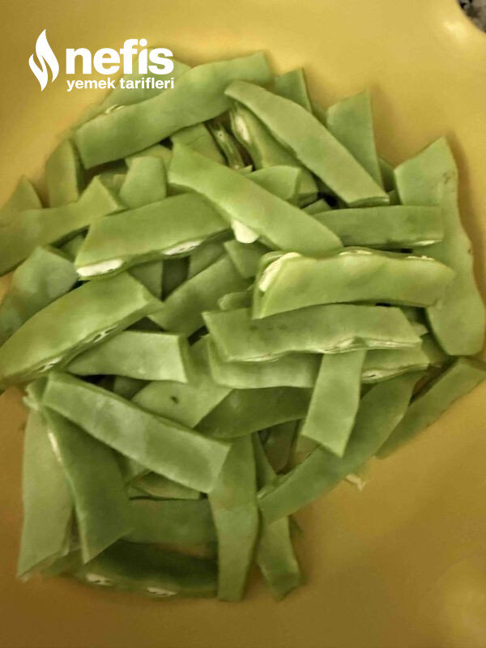
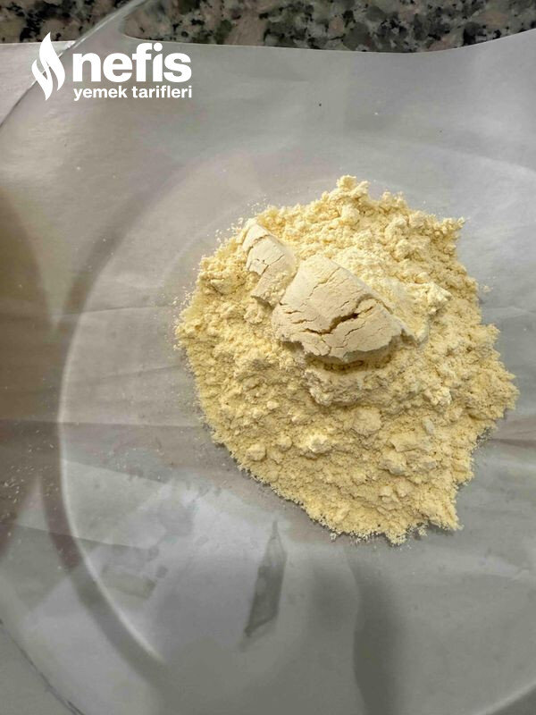
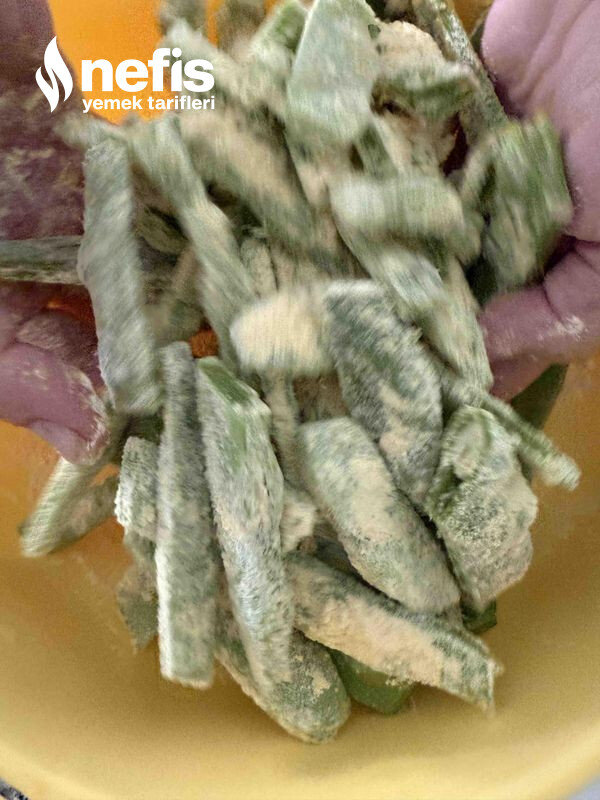
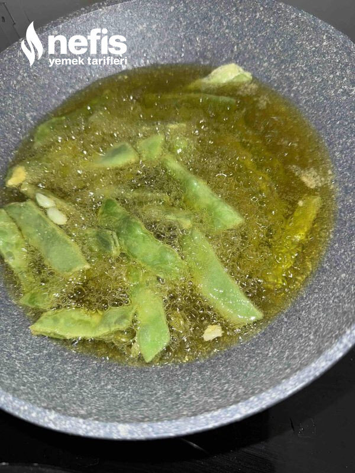
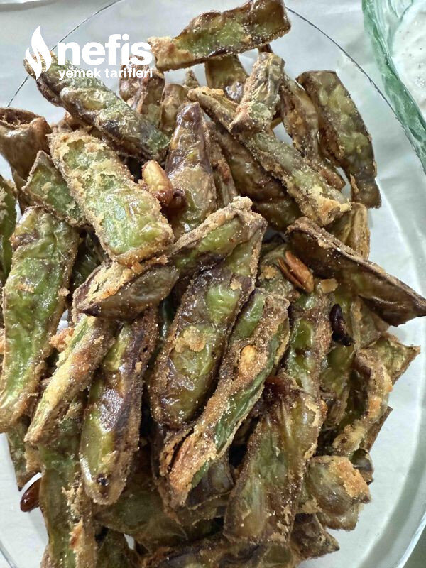
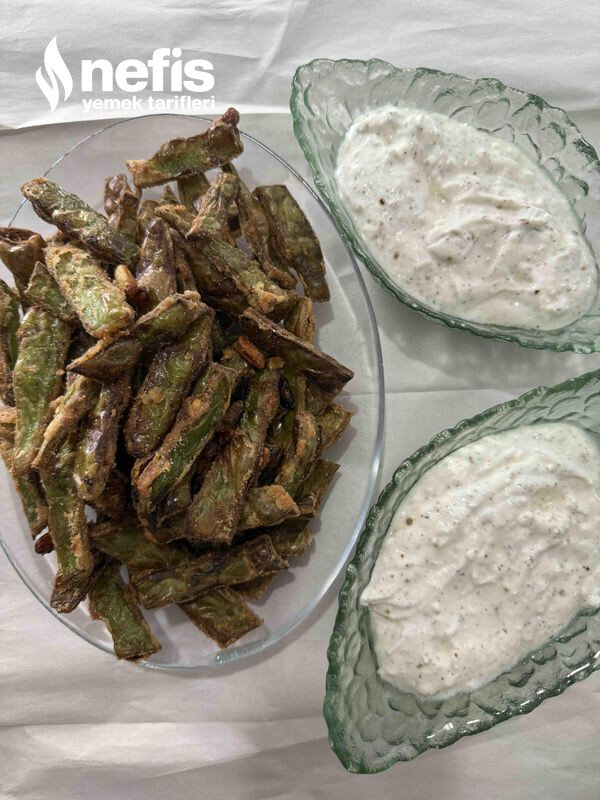

Nefis Çıtır Taze Fasulye Kızartması
2025-06-21
← Tüm tarifler

🍽️ 6-8 kişilik
⏱️ Hazırlık: 10 dk
🔥 Pişirme: 20 dk
🏷️ Salata & Meze & Kanepe
Malzemeler
Yarım kg taze fasulye
4 kaşık mısır unu
2 diş sarımsak
Tuz
Sıvı yağ
Yarım kg yoğurt
Varsa dereotu (evde olmadığı için kuru nane kullandım)
Arzu ettiğininiz baharatlar
Tuz
Karabiber
Pulbiber
Nane
Hazırlanışı
Fasulyeyi yıkayıp, ayıklayıp, istediğimiz büyüklükte kesiyoruz.
Rendelenmiş 2 diş sarımsak tuz ve 4 kaşık kadar mısır unuyla harmanlıyoruz.
Derin bir kapta bol yağda çıtır olana kadar kızartıyoruz.
Yağını alması için kâğıt havluya çıkarıyoruz.
Dip sosu hazırlıyoruz. Yoğurt, tuz, baharatlar, dereotunu karıştırıyoruz.
Çıtır fasulyeleri dipsosa batırarak afiyetle tüketiyoruz afiyet olsun 😊.
Fotoğraflar




